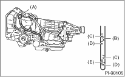

CAUTION:
The level of ATF varies with fluid temperature. Pay attention to the fluid temperature when checking ATF level.
1. Raise the ATF temperature by driving a distance of 5 to 10 km (3 to 6 miles). Otherwise, idle the engine to raise ATF temperature to 70 — 80°C (158 — 176°F) on Subaru Select Monitor. 
2. Make sure the vehicle is level.
3. After selecting all positions (P, R, N, D, 3, 2, 1), set the select lever in “P” range. Idle the engine for 1 — 2 minutes, and measure the ATF level.

|
(A) |
Level gauge |
|
(B) |
Check position when “HOT” [70 to 80°C (158 to 176°F)] |
|
(C) |
Upper level |
|
(D) |
Lower level |
|
(E) |
Check position when “COLD” [20 to 30°C (68 to 86°F)] |
4. Make sure that ATF level is above the center between upper and lower levels.
NOTE:
When the transmission is hot, the level should be above the center between upper and lower levels, and when it is cold, the level should be found below the center of these two levels.
5. If the ATF level is below the center between upper and lower levels, add the recommended ATF until the fluid level is found above the center between upper and lower levels.
CAUTION:
• Use care not to exceed the upper limit level.
• If ATF is spilt over exhaust pipe, wipe it off using cloth.
• Be sure not to add ATF up to the upper limit mark when the transmission is cold because that will be the cause for excessive filling of ATF, and will cause transmission failure.
6. Check the ATF level after raising ATF temperature to 70 — 80°C (158 — 176°F) by running the vehicle or by idling the engine again.
7. Check the ATF for leaks.
Check for leaks inside of the transmission. If there are leaks, repair or replace the gasket, oil seals, plugs or other parts.